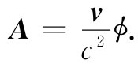
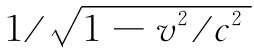
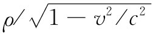

下一步我们希望应用李纳维谢尔势于一种特殊情况——即找出电荷沿一直线做匀速运动时所产生的场，以后再用相对论原理来求它。现在已经知道，当我们站在电荷的静止参照系中时势会怎样。当电荷在动时，则可以通过从一个参照系到另一个参照系的相对论性变换把每样东西都算出来。但相对论起源于电和磁的理论。洛伦兹变换式（第1卷第15章）是洛伦兹在研究电和磁的方程式时发现的。为了使你能够理解事情的由来，我们希望证明麦克斯韦方程组确会导致洛伦兹变换。我们从直接按照麦克斯韦方程组的电动力学来计算一个匀速运动电荷的势开始。我们已经证明，麦克斯韦方程组对一个运动电荷会导致曾在上一节中得到的势。因此，当我们引用这些势时，也就是在应用麦克斯韦理论。
图21-7 求出一个沿x轴以匀速运动的电荷在P点的势
设有一个沿x轴以速率v运动的电荷。我们要求出如图21-7所示的点P（x，y，z）的势。如果t=0时电荷处在原点，则在时刻t该电荷已处于x=vt，y=z=0的点。可是，我们所必须知道的却是在推迟时刻
电荷的位置，式中r′为从该推迟时刻 的电荷位置至P点的距离。在这一较早时刻t′，电荷位于x=vt′处，因而
为求得r′或t′，得将这个方程同式（21.35）结合起来。首先，通过式（21.35）解出r′并代入式（21.36）中把r′消去。然后对两边平方得到
c2 （t-t′）2 =（x-vt′）2 +y2 +z2 ，
这是关于t′的一个二次方程。把那些平方的二项式都展开，并把含t′的相似项收集起来，则可得
为求得r′，就得把这个t′的表示式代入下式：
r′=c（t-t′）.
现在我们准备由式（21.33）来求ϕ，由于v是恒量，所以这个式子变成
v在r′方向的分量为v（x-vt′）/r′，因而v·r′正好是v（x-vt′），而整个分母为
代入来自式（21.37）中的（1-v2 /c2 ）t′，对于ϕ我们获得
如果我们将上式重新写成下式，则更易于理解：
矢势A是有附加因子v/c2 的相同的表示式：

从式（21.39）中我们可以清楚地看到洛伦兹变换的起源。要是该电荷位于它本身的静止参照系中的原点，则它的势应该为
由于我们是在一个运动参照系中对它进行观察的，因而好像坐标应该通过下列式子进行变换：
那正好就是洛伦兹变换，而我们刚才所做的实质上也还是洛伦兹发现它时所用过的方法。
不过，出现于式（21.39）前面的那个附加因子 又是怎么一回事呢？另外，若在粒子的静止参照系中矢势A处处为零，则它在运动坐标系中表现成什么？我们不久将要证明，A和ϕ在一起 构成一个四元矢量，像粒子的动量p和总能量U那样。式（21.39）中那个附加因子 就是当人们在变换一个四元矢量的分量时总会出现的同样的因子——就像电荷密度变换成 那样。事实上，由式（21.4）和（21.5）就几乎可以明显地看出，A和ϕ是一个四元矢量的分量，因为我们已在第13章中证明j和ρ是一个四元矢量的分量。
以后我们还将更详细地考虑有关电动力学方面的相对论；这里只希望向你们表明，麦克斯韦方程组如何自然地导致洛伦兹变换。这样，当你发现电和磁的规律已经符合爱因斯坦的相对论时，将不会感到诧异。我们无需像对牛顿力学定律所必须做的那样去加以“修补”。
[1] 这一公式首先由Oliver Heaviside 于1902年发表。约在1950年它由R. P. 费恩曼独立导出，并作为对同步加速器辐射的一种优良想法在某些讲稿中曾经给出过。
[2] 如果你有大量纸张和时间，就可以自己试试将它算出来。那么，我们要提出两个建议：首先，不要忘记对r′取微商很复杂，因为它是t′的函数。其次，不要试图导出 式（21.1），而是要算出其中所有各种微商，然后同你从式（21.33）和（21.34）的势所获得的E比较。